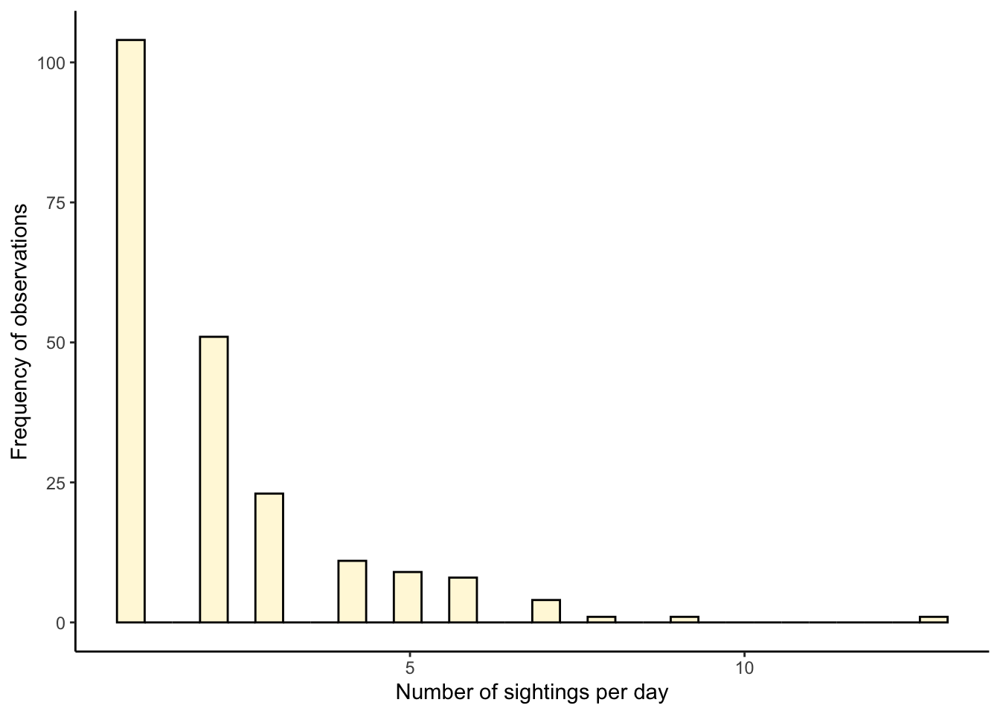
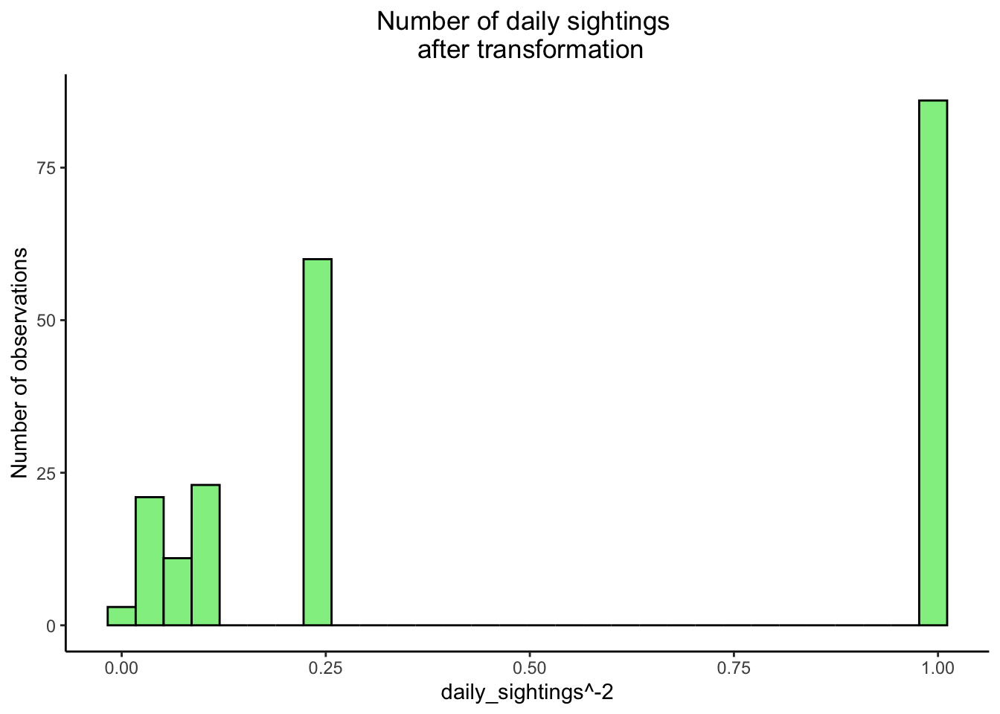
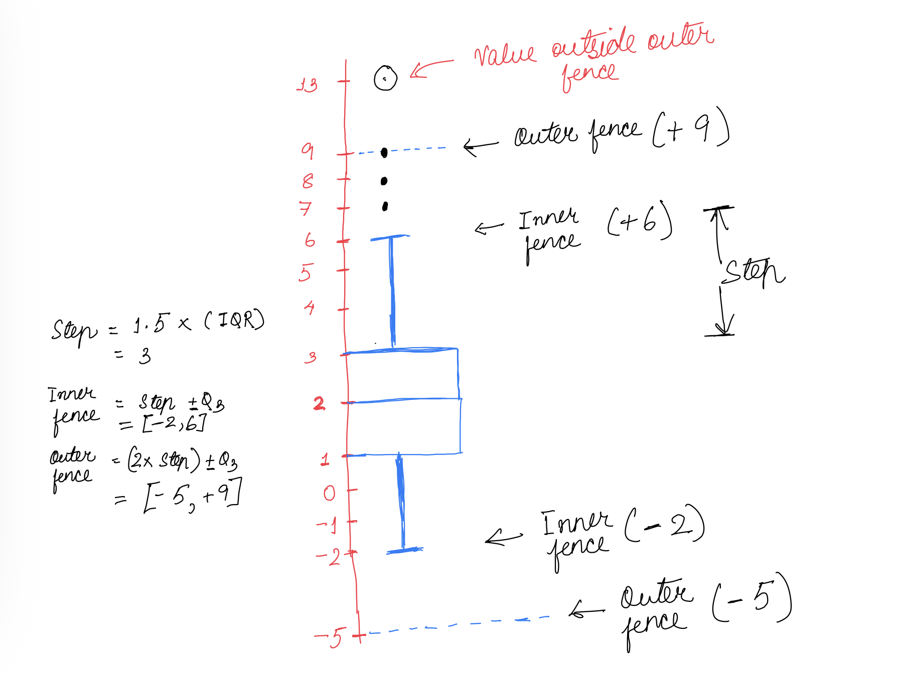
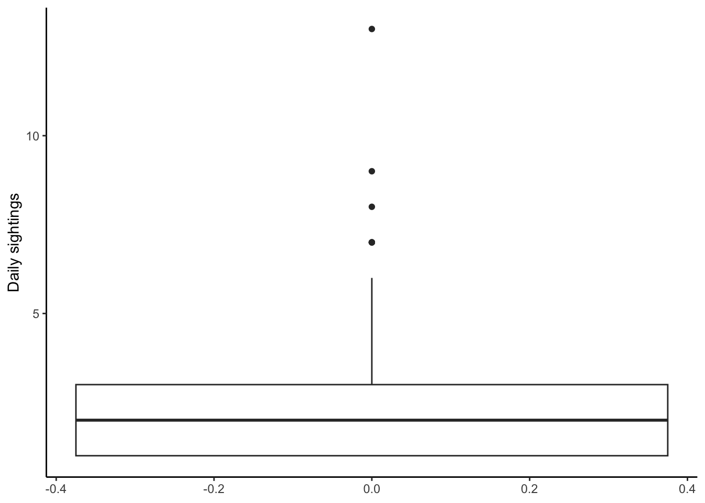

df_numbats <- read_csv("data/numbats.csv")Q3
Filter relevant data
In this section, we will filter our data in a manner such that we can focus on the sightings of Numbats across Australia from the years after 2010.
df_numbats <- df_numbats %>% filter(year(eventDate) > 2010 )Count of daily sightings
The number of Numbat sightings for each event date are calculated through the code chunk below.
df_numbats_daily <- df_numbats %>% group_by(eventDate) %>% summarise(daily_sightings = n())Visualisation of daily sightings
Let us now visualise this data through a histogram as illustrated by Figure 1
pl1 <- ggplot(data = df_numbats_daily,aes(x = daily_sightings)) + geom_histogram(fill = 'cornsilk',color = 'black') + labs(x = "Number of sightings per day",y = "Frequency of observations") + theme_classic()
pl1
💡 We can observe that majority of the daily sightings are around one per day. The distribution is right skewed with very daily sightings above 5 per day. 💡
While Figure 1 helped us visualise the data, we can obtain a similar distribution of the data using stem and leaf plot. Let us create this visualisation using the stem function in R.
stem(df_numbats_daily$daily_sightings)
The decimal point is at the |
1 | 00000000000000000000000000000000000000000000000000000000000000000000+24
2 | 000000000000000000000000000000000000000000000000000
3 | 00000000000000000000000
4 | 00000000000
5 | 000000000
6 | 00000000
7 | 0000
8 | 0
9 | 0
10 |
11 |
12 |
13 | 0
💡 As we can observe through the above visualisation, the stem and leaf plot illustrates a very similar understanding of the distribution of the data as the histogram plot. The stem leaf plot was able to capture the fact that majority of the observations were below 5 sightings per day and a right skew in the data could be observed. 💡
Data transformation
pl2 <- ggplot(data = df_numbats_daily,
aes(x = daily_sightings ^ -2)) +
geom_histogram(fill ='lightgreen', color = 'black') +
theme_classic() + labs(y = 'Number of observations') + ggtitle("Number of daily sightings \n after transformation") + theme(plot.title = element_text(hjust=0.5))
pl2
💡 Upon applying the reciprocal transformation on the square of the daily sightings per day across Australia, we were able to symmetrise the data to some extent. While working with symmetric distributions such as the Gaussian distribution is ideal for gaining critical insights through visualisations, however, as observed through Figure 2, the symmetrisation could not be adequately performed, partially due to lack of data. Furthermore, utilisation of transformations for the daily sightings data lead to decrease in intuition of the data and its corresponding visualisation as it is no longer easily understandable on how the data can be comprehended. 💡
Five number summaries based on Tukey’s EDA
Tukey’s EDA is based on the following 5 number summaries:
- Minimum value
- Lower hinge
- Median value
- Upper hinge
- Maximum value
table1 <- tibble()
table1 <- tibble("Minimum value" = min(df_numbats_daily$daily_sightings),
"Lower hinge" = quantile(df_numbats_daily$daily_sightings,0.25),
"Median" = median(df_numbats_daily$daily_sightings),
"Upper hinge" = quantile(df_numbats_daily$daily_sightings,0.75),
"Maximum" = max(df_numbats_daily$daily_sightings))
table1 %>% kable()| Minimum value | Lower hinge | Median | Upper hinge | Maximum |
|---|---|---|---|---|
| 1 | 1 | 2 | 3 | 13 |
Table 1 illustrates the five number summaries for the daily sightings of Numbats around Australia.
💡 The lower and upper hinge in Tukey’s EDA correspond to the 1st quartile (25th percentile) and 3rd quartile (75th percentile) observations respectively. 💡
Step, Inner and Outer fence calculation
Based on Tukey’s EDA, following are the salient definitions:
- Step: Step is dependent on the Inter Quartile Range (IQR) and is calculated as 1.5 times the IQR.
- Inner Fence: 1 step outside the hinges (Q1 or Q3). The inner fence generally classifies the mild outliers just around the edge of the whiskers of the boxplot.
- Outer Fence: 2 steps outside the hinges (Q1 or Q3). The outer fences generally classify the extreme outliers which are considerably away from the whiskers of the boxplot.
The calculated values for the daily sightings are tabulated in Table 2.
table2 <- tibble("Step" = 1.5*IQR(df_numbats_daily$daily_sightings),
"Inner fence" = quantile(df_numbats_daily$daily_sightings,0.75) + 1.5*IQR(df_numbats_daily$daily_sightings),
"Outer fence" = quantile(df_numbats_daily$daily_sightings,0.75) + 1.5*IQR(df_numbats_daily$daily_sightings) * 2)
table2 %>% kable()| Step | Inner fence | Outer fence |
|---|---|---|
| 3 | 6 | 9 |

Figure 3 illustrates a boxplot based on key values calculated in Table 1 and Table 2.
Boxplot of daily sightings
Let us try to visualise the observations of daily sightings through a boxplot as illustrated by Figure 4
pl4 <- ggplot(data = df_numbats_daily,aes(y = daily_sightings),color = 'black') + geom_boxplot() + labs(y = "Daily sightings") + theme_classic()
pl4
Figure 4 illustrates a boxplot with the distribution of daily sightings of Numbats across Australia. We can observe a total of 4 outlier values which are illustrated as point observations in the boxplot. These are those observations which are greater than the upper whisker. The upper whisker is calculated as below.
\[\boxed{Upper Whisker = (1.5 * IQR) + Q3}\] Based on the distribution of the histogram in Figure 1 and the stem plot, we can observe that the number of sightings which are above 5 per day are extremely low. This has been corroborated by the boxplot in Figure 4. As a result, we can conclude that the singular points marked in the boxplot are reasonably marked as outliers based on the upper whisker value as calculated above.